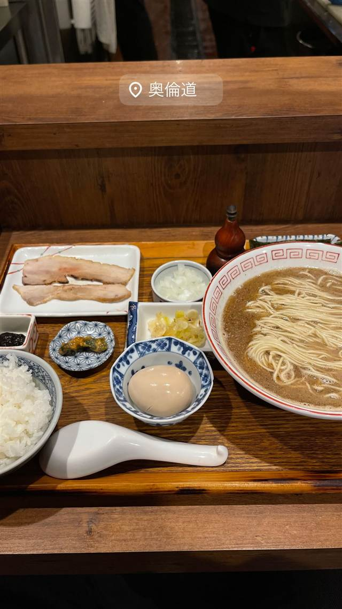

炭火焼濃厚中華そば 奥倫道
魚を骨ごとペーストにして炭火で焼き上げるあご出汁ラーメン
奥倫道
港区大門で2021年に開業した“道系”ラーメンの一角。魚を炭火で焼いて丸ごとペーストにし、あご出汁と合わせた「炭火焼濃厚中華そば」が名物で、鯖や秋刀魚など好みの魚を選んで注文できる。
TRIVIA
豆知識
- 「道系」は新橋『倫道』・神田『海富道』から連なるラーメンの系譜を指す呼び名
- 鯖・秋刀魚・鮭・烏賊など複数の魚からスープの種類を選べる
REVIEWS
世間の評判
91.2ラーメンDB3.64食べログ
鯖の風味を存分に生かした一杯
- 炭火焼と鯖節など魚の風味を存分に生かしたスープを絶賛する声が多い
- メニューごとに使う魚の個性が違い選ぶ楽しさがあるという声がある
- 先付けやビールの提供など丁寧な接客だったと触れる声も見られる
ラーメンデータベース 口コミ74件・最新 2026-07
| 創業 | 2021年開業（12月頃、大門） |
|---|---|
| 系譜 | 新橋「倫道」、神田「海富道」に連なる“道系”ラーメンの一店で、「倫道」の中華そばをさらに突き詰めた発展形として生まれた |
| 看板 | 炭火焼濃厚中華そば（鯖・秋刀魚・烏賊・鮭など魚を選べる） |
| こだわり | 魚を骨や皮ごと丸ごとペースト状にして炭火で香ばしく焼き上げ、あご出汁ベースのスープと合わせる。魚100%の旨みを凝縮した一杯 |
| どこから | 都心 |
| 営業時間 | 月〜日 11:00-22:00 |
| 予算 | 昼 ¥1,000～¥1,999 夜 ¥1,000～¥1,999 |
| 場所 | 大門駅 東京都港区浜松町（大門） |
| メモ | 券売機での食券制。白飯付きの「定食」もあり、複数の魚から味を選べる |
食べたもの：ラーメン定食
ひとりで入りやすい
OFFICIAL
店からの知らせ
その日の限定や臨時の休みは、店のXに出ます。
NEARBY
近い店・同じ系統の店
-
 ★
煮干し・魚介 荻窪
there is ramen
開業1年でミシュランのビブグルマンを獲得した花びらチャーシュー
昼 ¥1,000～¥1,999 夜 ¥1,000～¥1,999
★
煮干し・魚介 荻窪
there is ramen
開業1年でミシュランのビブグルマンを獲得した花びらチャーシュー
昼 ¥1,000～¥1,999 夜 ¥1,000～¥1,999
-
 ★
煮干し・魚介 旗の台
煮干しNoodles Nibo Nibo Cino
煮干しにオリーブオイルとニンニクを効かせた独自の「ニボニボチーノ」という一杯
昼 ¥1,000～¥1,999 夜 ¥1,000～¥1,999
★
煮干し・魚介 旗の台
煮干しNoodles Nibo Nibo Cino
煮干しにオリーブオイルとニンニクを効かせた独自の「ニボニボチーノ」という一杯
昼 ¥1,000～¥1,999 夜 ¥1,000～¥1,999
-
 ★
醤油・中華そば 大門駅
中華そば いづる
セメント系と呼ばれる濃厚煮干しファンの聖地
昼 ¥1,000～¥1,999 夜 ¥1,000～¥1,999
★
醤油・中華そば 大門駅
中華そば いづる
セメント系と呼ばれる濃厚煮干しファンの聖地
昼 ¥1,000～¥1,999 夜 ¥1,000～¥1,999
-
 ★
煮干し・魚介 三鷹駅
ラーメン 健やか
鶏と大アサリのダブル出汁が効いた無添加スープ
昼 ¥1,000～¥1,999 夜 ¥1,000～¥1,999
★
煮干し・魚介 三鷹駅
ラーメン 健やか
鶏と大アサリのダブル出汁が効いた無添加スープ
昼 ¥1,000～¥1,999 夜 ¥1,000～¥1,999
-
 コーヒー 御成門・浜松町・大門
ル・パン・コティディアン 芝公園店
ベルギー発、1990年創業のベーカリーで東京タワー望むテラス朝食
夜 ¥3,000～¥3,999
コーヒー 御成門・浜松町・大門
ル・パン・コティディアン 芝公園店
ベルギー発、1990年創業のベーカリーで東京タワー望むテラス朝食
夜 ¥3,000～¥3,999
-
 コーヒー 浜松町・大門
Byron Bay Coffee 大門店
バイロンベイ発、オーガニック志向のアサイーボウルとコーヒー
昼 ¥1,000～¥1,999 夜 ¥1,000～¥1,999
コーヒー 浜松町・大門
Byron Bay Coffee 大門店
バイロンベイ発、オーガニック志向のアサイーボウルとコーヒー
昼 ¥1,000～¥1,999 夜 ¥1,000～¥1,999
ONSEN & SAUNA